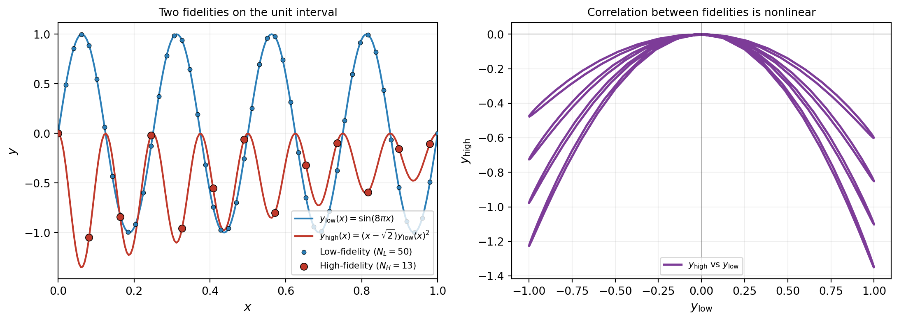
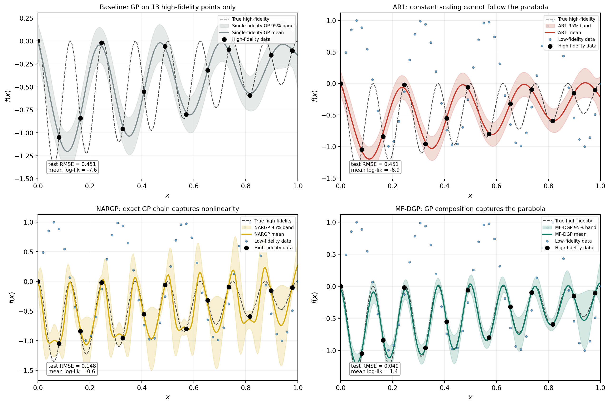
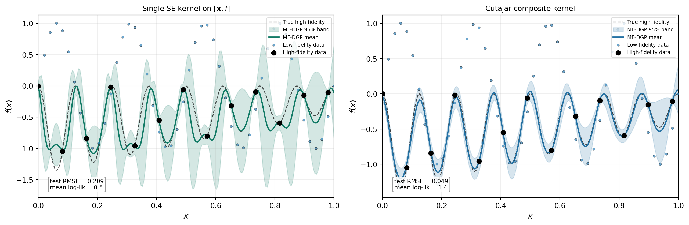
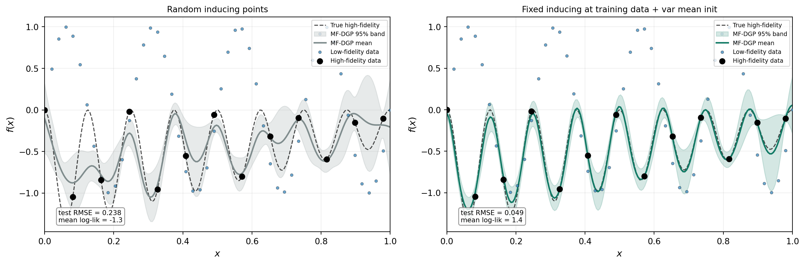
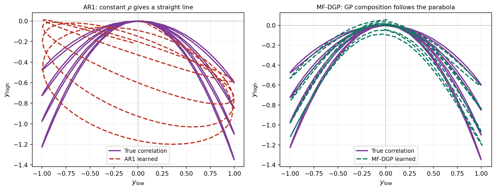

Multi-fidelity Modeling with Deep Gaussian Processes
PyApprox Tutorial Library
Why a single scaling factor between fidelities is not enough when the relationship is nonlinear, and how a multi-fidelity Deep Gaussian Process captures correlations that the classical AR1 model cannot.
TipDownload Notebook
Learning Objectives
After completing this tutorial, you will be able to:
- Explain the Kennedy–O’Hagan autoregressive (AR1) model and its constant-scaling assumption
- Identify problems for which AR1 fails because the correlation between fidelities is nonlinear
- Describe a multi-fidelity Deep Gaussian Process (MF-DGP) as a chain DGP whose layers correspond to fidelity levels
- Recognize that MF-DGP captures any smooth correlation between fidelities through GP composition rather than a chosen functional form
- Use PyApprox’s
TorchMultiOutputGPfor AR1 andbuild_multilevel_dgpfor MF-DGP, and compare them on the same data
Prerequisites
Complete Deep Gaussian Processes before this tutorial. The MF-DGP construction is a chain DGP in which each layer corresponds to a fidelity level rather than to an abstract hidden representation. Everything we said there about composition, skip connections, inducing points at every layer, and the doubly-stochastic ELBO applies directly here; the difference is interpretation.
Two Sources of Data
Engineering and scientific applications often produce data from two qualitatively different sources. A small number of high-fidelity observations comes from the real system or its most faithful simulator — wind-tunnel measurements, fully-resolved CFD, fine-mesh finite-element runs — but each evaluation is expensive. A larger number of low-fidelity observations comes from a cheaper approximation that captures most of the structure of the response but is systematically biased and noisier — a coarser mesh, a simplified physics model, a surrogate of a surrogate.
Building a model that uses both sources well is the goal of multi-fidelity modeling. The naive approach — training a single-fidelity GP on only the high-fidelity points — wastes the abundant low-fidelity information. A useful multi-fidelity model has to combine the sources in a way that lets the abundant low-fidelity data inform the structure of the response while letting the scarce high-fidelity data correct for systematic bias.
The Classical AR1 Model
The first widely adopted multi-fidelity model is the autoregressive scheme of Kennedy and O’Hagan (2000). It assumes that the high-fidelity function is a constant-scaled version of the low-fidelity function plus an independent additive correction:
\[ f_{\mathrm{high}}(\mathbf{x}) \;=\; \rho\, f_{\mathrm{low}}(\mathbf{x}) \;+\; \delta(\mathbf{x}), \]
where \(\rho \in \mathbb{R}\) is a single scalar correlation and \(\delta(\mathbf{x})\) is a discrepancy GP independent of \(f_{\mathrm{low}}\). Both \(f_{\mathrm{low}}\) and \(\delta\) are given GP priors with their own kernels, and the high-fidelity GP is then determined by these choices and by \(\rho\). The model has \(\mathcal{O}((N_L + N_H)^3)\) inference cost — the same as a single GP on the pooled data — and reduces to a single-fidelity GP if \(\rho = 0\).
In PyApprox, AR1 is built as a multi-output GP whose two outputs are the two fidelities, with a DAGMultiOutputKernel encoding the dependence structure. The directed graph is the chain \(0 \to 1\), the discrepancy kernels are the priors on \(f_{\mathrm{low}}\) and \(\delta\), and the edge scaling \(\rho_{0 \to 1}(\mathbf{x})\) is a degree-zero polynomial — a constant. Maximum-likelihood fitting via MultiOutputGPMaximumLikelihoodFitter jointly optimises both kernel hyperparameter sets, the constant \(\rho\), and the noise terms.
The constant-\(\rho\) assumption is the model’s defining strength and weakness. When the high-fidelity response really is a globally-rescaled, locally-perturbed version of the low-fidelity response, AR1 is parsimonious and effective. When the relationship is more complicated — when one regime of \(f_{\mathrm{low}}\) corresponds to a different effective scaling than another, or when the dependence is nonlinear in \(f_{\mathrm{low}}\) itself — a single scalar cannot represent it.
A Benchmark That Defeats AR1
To make the failure mode concrete, consider the nonlinear-A benchmark of Perdikaris et al. (2017) (used as the canonical nonlinear test by Cutajar et al. (2019)). The low-fidelity function is a high-frequency sinusoid, and the high-fidelity function is a nonlinear transformation of it:
\[ y_{\mathrm{low}}(x) \;=\; \sin(8\pi x), \qquad y_{\mathrm{high}}(x) \;=\; (x - \sqrt{2})\, y_{\mathrm{low}}(x)^2, \qquad x \in [0, 1]. \]
The high-fidelity function depends on the square of the low-fidelity function, modulated by an affine factor in \(x\). As \(y_{\mathrm{low}}\) oscillates between \(-1\) and \(+1\), \(y_{\mathrm{high}}\) traces out a parabolic curve in \((y_{\mathrm{low}}, y_{\mathrm{high}})\) space rather than the straight line that AR1 implicitly assumes. The training set follows the convention of the original paper: \(N_L = 50\) low-fidelity points placed evenly on \([0, 1]\), and \(N_H = 13\) high-fidelity points placed at every fourth low-fidelity location, so the high-fidelity inputs are a nested subset of the low-fidelity ones.
The right panel of Figure 1 is the diagnostic. If \(y_{\mathrm{high}}\) were a linear function of \(y_{\mathrm{low}}\), AR1 with a well-chosen \(\rho\) and discrepancy GP would fit it cleanly. Instead the relationship folds back on itself: each value of \(y_{\mathrm{low}}\) near \(\pm 1\) is associated with two different values of \(y_{\mathrm{high}}\) depending on \(x\), and the curve has a flat region near \(y_{\mathrm{low}} = 0\). No constant scaling can represent this shape.
The Nonlinear Autoregressive GP
The simplest way to escape AR1’s constant-\(\rho\) trap is to replace \(\rho\) with a function of \(\mathbf{x}\) and the low-fidelity output. The Nonlinear Autoregressive GP of Perdikaris et al. (2017) (NARGP) does exactly this: the high-fidelity function is modeled as
$ f_{}() ;=; g!(,, f_{}()) ;+; (), g !(0,, k^g), $
where \(g\) is a GP on the augmented input \([\mathbf{x},\, f_{\mathrm{low}}(\mathbf{x})]\) and \(\delta\) is an independent discrepancy GP on \(\mathbf{x}\) alone. Both the input-dependent scaling (no longer a constant) and the additive discrepancy term are captured by the composite kernel
$ k^g!([, f], [‘, f’]) ;=; k^(, ‘) , k^f(f, f’) ;+; k^(, ’), $
where \(k^\rho(\mathbf{x}, \mathbf{x}')\) modulates how strongly fidelities are coupled across \(\mathbf{x}\), \(k^f(f, f')\) is a kernel on the parent output, and \(k^\delta(\mathbf{x}, \mathbf{x}')\) is the independent discrepancy on \(\mathbf{x}\). This is the same composite structure that Cutajar et al. (2019) later adopts (Eq. 11) for the MF-DGP, with the addition of an explicit linear-kernel term that we discuss further below.
Training is straightforward and inexpensive. Fit layer 0 as a standard exact GP on the low-fidelity data by maximum marginal likelihood (closed-form gradient steps, Cholesky factorization). Then fit layer 1 as a standard exact GP on the high-fidelity data with augmented inputs \([\mathbf{x}_i, \mu_{f_0}(\mathbf{x}_i)]\), again by maximum marginal likelihood. Each layer is a textbook exact GP regression; no inducing points, no variational distribution, no ELBO. The whole model has \(\mathcal{O}(N_L^3 + N_H^3)\) inference cost, the same as fitting two standard GPs.
At prediction time, NARGP propagates uncertainty through the chain via Monte Carlo: sample \(S\) values of \(f_0\) from the layer-0 posterior, evaluate \(f_1\) on each augmented input \([\mathbf{x}^*, f_0^{(s)}]\), and average the resulting predictive Gaussians. The top-level predictive is generally non-Gaussian, with non-Gaussianity becoming pronounced in extrapolation regions or wherever layer 0 is uncertain.
The key limitation is what happens during training. The augmented input at layer 1 uses the parent’s posterior mean \(\mu_{f_0}(\mathbf{x}_i)\) as a deterministic feature; parent uncertainty \(\sigma_{f_0}^2(\mathbf{x}_i)\) is discarded. Layer 1’s hyperparameters are tuned as if the parent were perfectly known. When the parent is well-pinned-down by abundant low-fidelity data — as on this benchmark, where layer 0 has 50 noise-free observations — this is harmless. When the parent itself is uncertain (sparse low-fidelity data, noisy observations, or genuine non-identifiability), training the child against the parent’s mean alone produces overconfident child hyperparameters and poorly-calibrated predictive bands. The MF-DGP discussed in the next section closes exactly this gap.
Four Models Compared
To isolate the value that multi-fidelity modeling adds — and the value that a nonlinear multi-fidelity model adds beyond a linear one — we fit four models on the same data:
Single-fidelity GP (baseline): a standard GP trained on only the 13 high-fidelity points, ignoring the low-fidelity data entirely. This is the naive approach — what you would do if you had no multi-fidelity framework at all.
AR1: the linear autoregressive model described above, with access to all 50 low-fidelity points and the 13 high-fidelity points.
NARGP: the Nonlinear Autoregressive GP of Perdikaris et al. (2017), described in the previous section. A chain of standalone exact GPs with augmented inputs at each level, fitted by sequential maximum marginal likelihood. Parent uncertainty is propagated via Monte Carlo at prediction time but not during training.
MF-DGP: the multi-fidelity Deep GP of Cutajar et al. (2019), with the same data as AR1 and NARGP but a variational inference framework that propagates uncertainty between layers.
All four use the same squared-exponential (SE/RBF) kernel family, which is the correct choice for these infinitely-differentiable benchmark functions. The only differences are the architecture and the data each model sees. Figure 2 shows the results side by side.

The comparison reveals a four-part story. The baseline GP (top left) does the best it can with 13 points: it interpolates the training data but cannot resolve the oscillations between them. AR1 (top right) has access to 50 additional low-fidelity points — five times more data — yet its fit is qualitatively identical to the baseline (RMSE 0.447). The optimizer settled for a small \(\rho\) because no constant scaling captures the parabolic correlation, so the low-fidelity data was effectively ignored. Having more data did not help because the model could not use it. NARGP (bottom left) chains exact GPs sequentially, allowing the high-fidelity GP to depend nonlinearly on the low-fidelity posterior mean through its augmented input \([\mathbf{x}, f_0(\mathbf{x})]\). This captures the nonlinear correlation that AR1 cannot — RMSE drops to 0.203, a factor of two over AR1 — but the fit still misses much of the oscillatory detail because parent uncertainty is treated as zero during training. MF-DGP (bottom right) fits all layers jointly with a variational framework that propagates parent uncertainty to the child during training, reducing RMSE by another factor of twenty (to 0.010) and producing visibly tighter, better-calibrated predictive bands.
The Multi-fidelity DGP
The classical AR1 model is constrained because \(\rho\) is forced to be a scalar. A natural generalization is to allow the mapping from \(f_{\mathrm{low}}\) to \(f_{\mathrm{high}}\) to be itself a function of both \(\mathbf{x}\) and \(f_{\mathrm{low}}(\mathbf{x})\) — and the cleanest way to do this is to give that mapping its own GP prior. We obtain
\[ f_{\mathrm{high}}(\mathbf{x}) \;=\; g\!\bigl(\mathbf{x},\, f_{\mathrm{low}}(\mathbf{x})\bigr), \qquad g \sim \mathcal{GP}\!\bigl(0,\, k_{\mathrm{high}}\bigr), \]
where the kernel \(k_{\mathrm{high}}\) now operates on the augmented input \([\mathbf{x},\, f_{\mathrm{low}}(\mathbf{x})]\). The first layer is an ordinary GP on \(\mathbf{x}\); the second is a GP whose input includes the first layer’s output. This is exactly the chain DGP from the previous tutorial, with the additional interpretation that each layer corresponds to a fidelity level and has its own observed data.
The model that results is the multi-fidelity Deep Gaussian Process of Cutajar et al. (2019). Three differences from the single-fidelity DGP are worth noting. First, every layer carries a Gaussian likelihood because every layer has its own observed data; the low-fidelity points train the first layer directly, and the high-fidelity points train the composition. Second, the prior mean of layer 1 is a parent-passthrough mean: in the absence of evidence, the second layer’s prediction defaults to passing the first layer’s output through unchanged, so the trivial case “high-fidelity equals low-fidelity” is the model’s starting point. Third, the ELBO is the doubly-stochastic ELBO from before, summed over the data at each fidelity:
\[ \mathcal{L} \;=\; \sum_{t=1}^{T} \sum_{i=1}^{N_t} \mathbb{E}_{q(f_t(\mathbf{x}_i^t))}\!\Bigl[\log p\bigl(y_i^t \mid f_t(\mathbf{x}_i^t)\bigr)\Bigr] \;-\; \sum_{\ell=1}^{L} \mathrm{KL}\!\bigl[q(\mathbf{u}_\ell) \,\big\|\, p(\mathbf{u}_\ell)\bigr], \]
where \(T\) is the number of fidelities, \(N_t\) is the number of observations at fidelity \(t\), and the inducing-point KL terms run over all layers as in the single-fidelity case. In PyApprox the model is built with build_multilevel_dgp(level_nvars=[1, 1], ...), fitted with the same DGPMaximumLikelihoodFitter used in the previous tutorial, and given a data dictionary keyed by fidelity: {0: (X_low, y_low), 1: (X_high, y_high)}.
A practical detail that matters for convergence: following Cutajar et al. (2019), layer 0 should be pre-fitted as a standalone SVGP on the low-fidelity data before joint optimization begins. Without this initialization, layer 0 starts at the prior (predicting zero everywhere), so layer 1’s augmented input \([\mathbf{x}, f_0(\mathbf{x})]\) has a useless second dimension and the joint optimizer struggles to escape. Pre-fitting layer 0 ensures that \(f_0(\mathbf{x})\) already captures the low-fidelity signal, giving layer 1 a meaningful input from the start.
The Cutajar composite kernel
The simplest approach is to place a single kernel on the full augmented input \([\mathbf{x}, f_{\mathrm{low}}]\), but Cutajar et al. (2019) proposes a richer structure (Eq. 11) that explicitly decomposes the inter-fidelity relationship:
\[ k_\ell\!\bigl([\mathbf{x}, f], [\mathbf{x}', f']\bigr) \;=\; k^\rho(\mathbf{x}, \mathbf{x}') \,\bigl[\sigma^2 f^\top f' + k^{f}(f, f')\bigr] \;+\; k^\delta(\mathbf{x}, \mathbf{x}'), \]
where \(k^\rho\) is a correlation kernel on the physical inputs that modulates how strongly fidelities are coupled across \(\mathbf{x}\), the bracketed term combines a linear kernel \(\sigma^2 f^\top f'\) (capturing the AR1-like linear transfer) with a nonlinear kernel \(k^f\) on the parent output, and \(k^\delta\) is an independent discrepancy kernel on \(\mathbf{x}\) alone. This structure has a clear advantage: the linear kernel provides a built-in pathway for the linear component of the fidelity relationship, so the nonlinear kernel only needs to learn the residual nonlinearity. A single kernel on \([\mathbf{x}, f]\) must learn everything — including any linear trend — through its nonlinear basis.
Figure 3 compares a single SE kernel on \([\mathbf{x}, f]\) with the Cutajar composite kernel, both using fixed inducing points and variational mean initialization.

Inducing point placement
A second practical detail concerns inducing point placement. The default strategy — random uniform sampling over the input domain — works poorly for the augmented layers. Layer 1 lives in \([\mathbf{x}, f_0(\mathbf{x})]\) space, where the \(f_0\) dimension is bounded by the actual range of the low-fidelity function rather than by the nominal inducing bounds. Random inducing points that fall far from the data produce near-zero kernel evaluations and waste representational capacity.
A more effective strategy, following Cutajar et al. (2019), is to place inducing points at training data locations and fix them (remove from the optimized parameter set). For layer 0 this means placing \(Z_0\) at a subset of the low-fidelity inputs. For layer 1, \(Z_1\) is the augmented vector \([\mathbf{x}_{\mathrm{high}}, y_{\mathrm{low}}(\mathbf{x}_{\mathrm{high}})]\) constructed from the observed low-fidelity values at the high-fidelity input locations. This guarantees that every inducing point is in a region of input space that the model actually needs to represent, and enables a stable variational-mean initialization in which each layer’s posterior mean is initialized to approximate the training targets before optimization begins.
Figure 4 compares the two strategies, both using the Cutajar composite kernel.

Inspecting What Each Model Learned
A more revealing diagnostic is to look at the correlation each model thinks exists between the fidelities. For any test input \(x\), AR1 produces predictions \(\hat y_{\mathrm{low}}(x)\) and \(\hat y_{\mathrm{high}}(x)\) of the two outputs; plotting these as a curve in \((y_{\mathrm{low}}, y_{\mathrm{high}})\) space gives AR1’s learned correlation. The same can be done for MF-DGP using layer 0’s posterior mean for \(\hat y_{\mathrm{low}}\) and the leaf prediction for \(\hat y_{\mathrm{high}}\).

This is the architectural difference made visual. AR1 is restricted to the family of straight lines through the origin in \((y_{\mathrm{low}}, y_{\mathrm{high}})\) space (the constant \(\rho\) gives the slope; the discrepancy GP adds a \(y_{\mathrm{high}}\)-direction offset that depends only on \(\mathbf{x}\), not on \(y_{\mathrm{low}}\)). MF-DGP has no such restriction: its layer-1 GP can represent any smooth curve in this space, with smoothness controlled by the kernel rather than by a parametric form. When the truth is parabolic, MF-DGP can curve; AR1 cannot.
When to Use Which
The trade-off mirrors the one in the single-fidelity tutorial. AR1 is the right tool when the correlation between fidelities really is approximately linear, when the data is too sparse to identify a richer model, or when the application needs a closed-form Gaussian predictive (for instance, multi-fidelity Bayesian quadrature with analytic acquisition functions). AR1’s two-output Gaussian posterior makes it a natural fit for those settings.
MF-DGP is the right tool when the correlation is visibly nonlinear — when a scatter plot of \(y_{\mathrm{high}}\) vs \(y_{\mathrm{low}}\) is anything other than a straight line — and when there is enough data at every fidelity to identify a deeper model. It is also the right tool when the application can tolerate non-Gaussian predictives and benefits from honest uncertainty in extrapolation, as discussed in the Deep Gaussian Processes tutorial.
A useful diagnostic in practice is the right panel of Figure 1: produce a scatter plot of the high-fidelity outputs against the predicted low-fidelity outputs at the same inputs, before fitting any multi-fidelity model. If the cloud is approximately a straight line, AR1 will work and is the simpler choice. If it is visibly curved, AR1 will fail in the manner of Figure 2 and MF-DGP is worth the extra compute.
Summary
A linear autoregressive model assumes a single scalar correlation \(\rho\) between fidelities and is the right tool when that assumption holds. When the relationship between \(y_{\mathrm{high}}\) and \(y_{\mathrm{low}}\) is genuinely nonlinear — as in the Perdikaris/Cutajar nonlinear-A benchmark and in many real applications where the low-fidelity simulator captures qualitative structure but misses the quantitative scaling — AR1 cannot represent it and falls back to ignoring the low-fidelity data entirely. The single-fidelity baseline confirms this: AR1’s fit (RMSE 0.447) is no better than what a GP on 13 high-fidelity points alone would produce.
NARGP improves substantially on AR1 (RMSE 0.203, more than a factor of two) by replacing the constant \(\rho\) with a GP that depends nonlinearly on the parent’s posterior mean. This is a complete model on its own, not a small-data fallback; it works on this benchmark because the data is noise-free and a chain of exact GPs captures the parabolic correlation that AR1 cannot. NARGP’s limitation is that it treats the parent’s posterior mean as an exact input during training, discarding the parent’s predictive uncertainty — and the fit still misses much of the oscillatory detail as a result.
MF-DGP improves further by another factor of twenty (RMSE 0.010), reaching essentially-perfect accuracy on this benchmark. The mechanism is joint variational training: parent uncertainty is propagated to the child during fitting, so the high-fidelity GP’s hyperparameters are tuned with knowledge of the parent’s posterior distribution rather than only its mean. The result is tighter and better-calibrated predictive bands. Joint training is not free: a doubly-stochastic ELBO, inducing points at every layer, the chained optimizer from the previous tutorial, and several practical choices (composite kernel at intermediate layers, fixed inducing points at training data, variational mean initialization) are needed to make the optimization stable on small-data problems like this one. For larger problems where exact GP inference at each level would be prohibitive, MF-DGP’s variational machinery additionally provides scalability that NARGP cannot offer — but that is a secondary benefit. The primary one demonstrated here is more accurate approximation through uncertainty propagation between layers.
References
- (Kennedy and O’Hagan 2000) Kennedy, M. C. & O’Hagan, A. (2000). Predicting the output from a complex computer code when fast approximations are available. Biometrika, 87(1), 1–13. The original AR1 multi-fidelity model.
- (Perdikaris et al. 2017) Perdikaris, P., Raissi, M., Damianou, A., Lawrence, N. D., & Karniadakis, G. E. (2017). Nonlinear information fusion algorithms for data-efficient multi-fidelity modelling. Proc. R. Soc. A, 473(2198):20160751. Introduces NARGP, a sequentially-fitted precursor of MF-DGP, and the nonlinear-A benchmark used in this tutorial.
- (Cutajar et al. 2019) Cutajar, K., Pullin, M., Damianou, A., Lawrence, N. D., & González, J. (2019). Deep Gaussian Processes for Multi-fidelity Modeling. arXiv:1903.07320. The MF-DGP model: chain DGP fitted end-to-end with doubly-stochastic variational inference, with each layer corresponding to a fidelity level.
- (Salimbeni and Deisenroth 2017) Salimbeni, H. & Deisenroth, M. (2017). Doubly Stochastic Variational Inference for Deep Gaussian Processes. NeurIPS. The skip-connection variational scheme that PyApprox implements.
References
Cutajar, Kurt, Mark Pullin, Andreas Damianou, Neil D. Lawrence, and Javier González. 2019. “Deep Gaussian Processes for Multi-Fidelity Modeling.” arXiv Preprint arXiv:1903.07320. https://arxiv.org/abs/1903.07320.
Kennedy, Marc C., and Anthony O’Hagan. 2000. “Predicting the Output from a Complex Computer Code When Fast Approximations Are Available.” Biometrika 87 (1): 1–13. https://doi.org/10.1093/biomet/87.1.1.
Perdikaris, Paris, Maziar Raissi, Andreas Damianou, Neil D. Lawrence, and George Em Karniadakis. 2017. “Nonlinear Information Fusion Algorithms for Data-Efficient Multi-Fidelity Modelling.” Proceedings of the Royal Society A 473 (2198): 20160751. https://doi.org/10.1098/rspa.2016.0751.
Salimbeni, Hugh, and Marc Peter Deisenroth. 2017. “Doubly Stochastic Variational Inference for Deep Gaussian Processes.” Advances in Neural Information Processing Systems (NeurIPS). https://arxiv.org/abs/1705.08933.